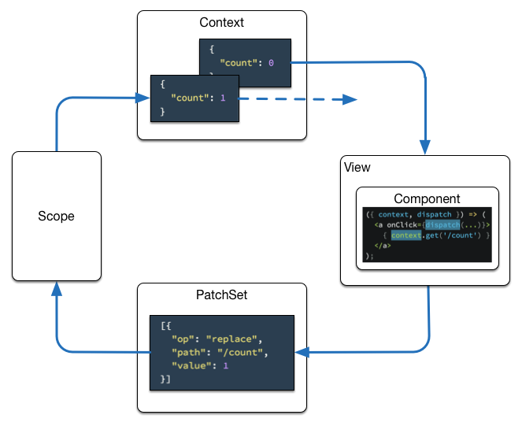

fux
Fux is a user interface library with uni-directional dataflow.
Install
NPM
npm install --save-dev fux
Starter Project
- download example.zip from Github
- extract and run
npm run dev - this starts a minimal build process with preconfigured babel and browserify
- point your browser to localhost:8080 to view the examples
- or use this as template for your own project
Usage
import { element, cycle, views, scopes, decorators } from 'fux';
const { component, controller, dispatchChangeSets } = decorators;
const App = component(
dispatchChangeSets(),
controller({
inc: ['/count', count => count + 1]
}),
)(function({ context }) {
return (
<div>
<input type='button' onClick='inc'/>
{context.get('/count')}
</div>
);
});
const view = views.dom(document.body, App);
const scope = scopes.value({ count: 0 });
cycle(view, scope);
Architecture

- Context
- immutable data structure (struct)
- holds application context
- emitted from scopes, when they have new data
- consumed from views
- PatchSet
- list of json patch objects
- used like actions in flux architecture
- used to manipulate Context
- emitted from views, when they change state
- consumed from scopes
- Scope
- state container
- representation of data that may change over time (stream)
View
- passes context to deku component
- render component to DOM
- component may dispatch PatchSet on user interaction
- available views
- fux.views.dom
-
- stateless
- dispatches side effects to scopes
- additional functionality added through decorators
Api
fux
fux.scopes
fux.views
fux.decorators
Hack
git clone https://github.com/freemountain/fux
cd fux
npm install
npm run dev
... and click here
License
The MIT License (MIT)